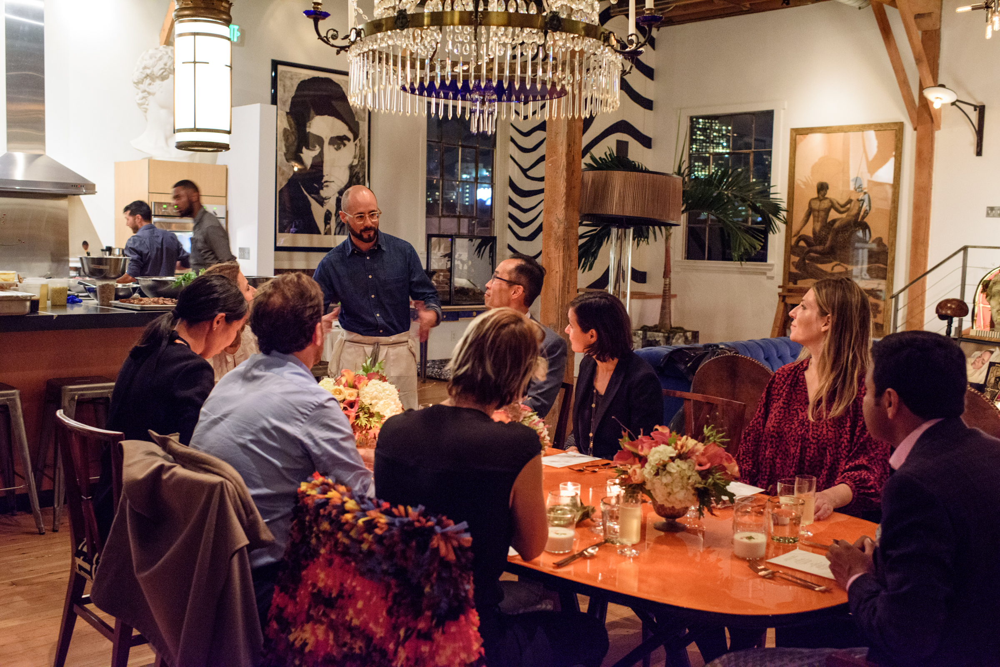
From intimate gatherings to large-scale events — every menu shaped by the season, the place, and the people at the table.
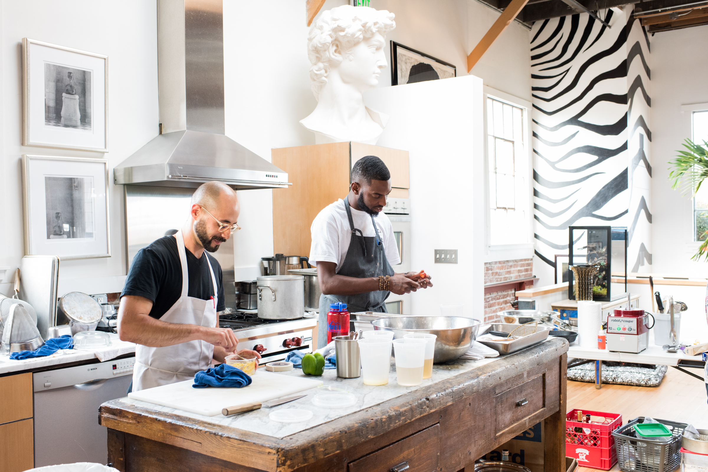
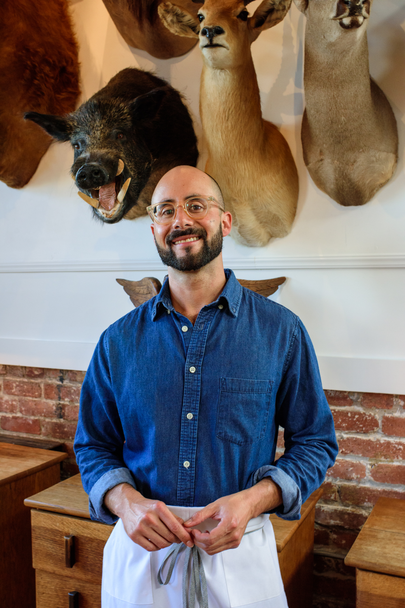
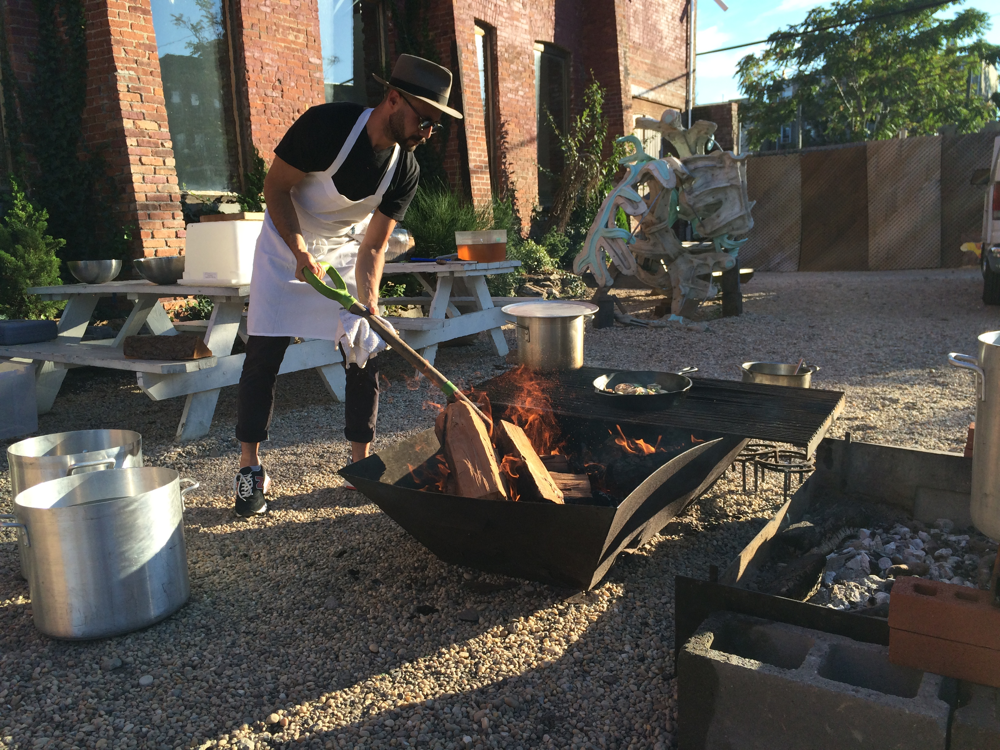
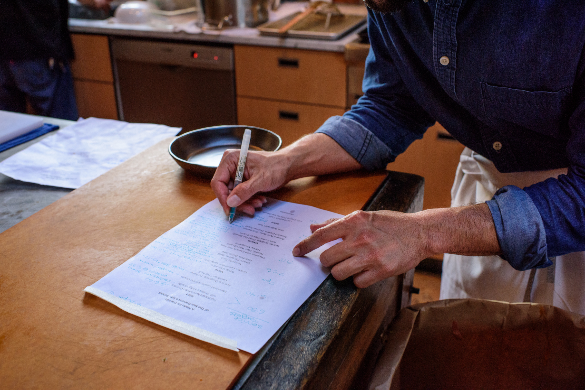
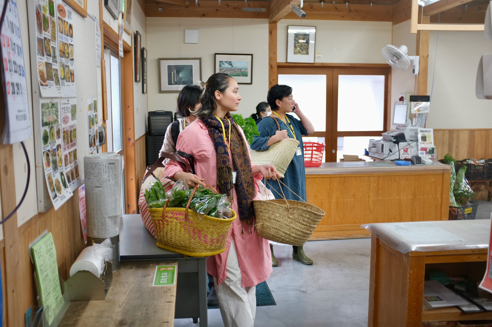
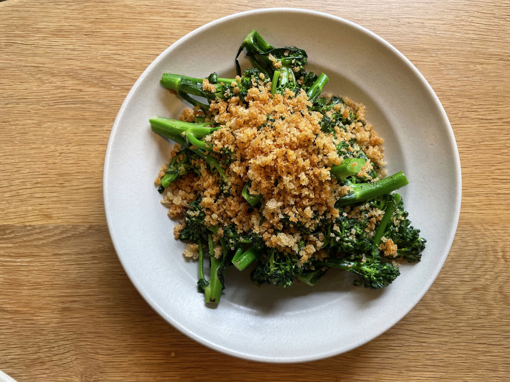
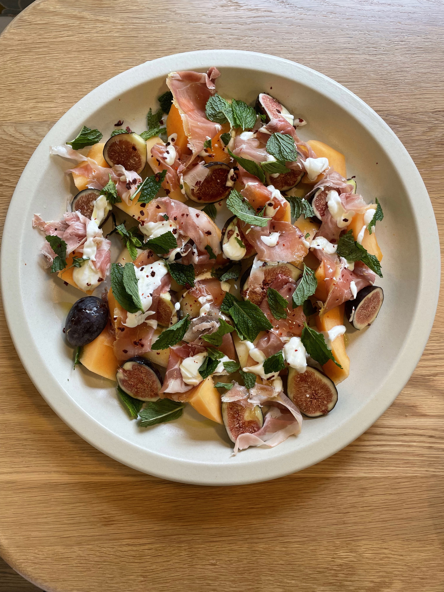
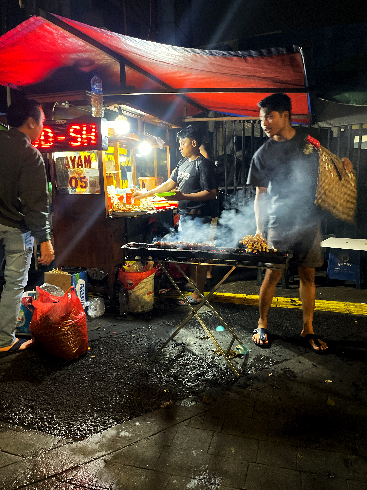
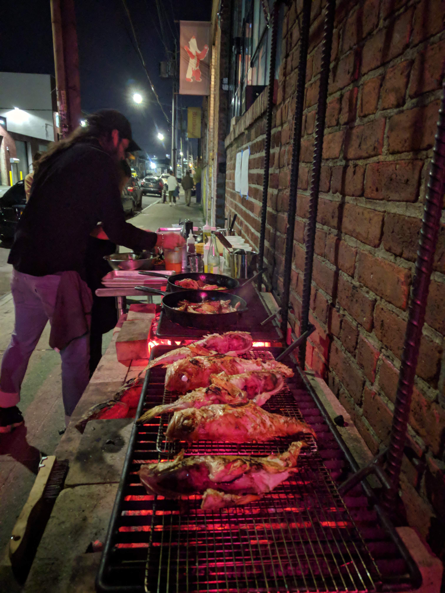
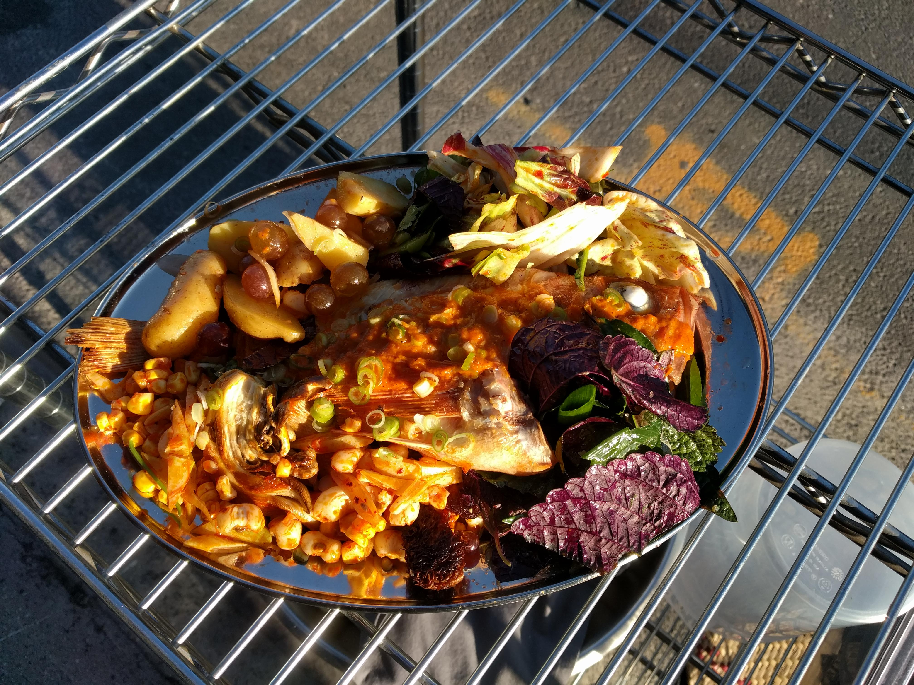
Intimate gatherings, artfully considered menus — each one shaped by the season and the occasion.
Full-service catering for cultural events, gallery openings, and private gatherings.
Pop-ups and joint projects with other chefs, artists, and venues. Interested in food at the intersection of culture, community, and craft.
Menu development and concept consulting for restaurants, startups, and food-forward projects.
Tell me what you have in mind.
Get in touch